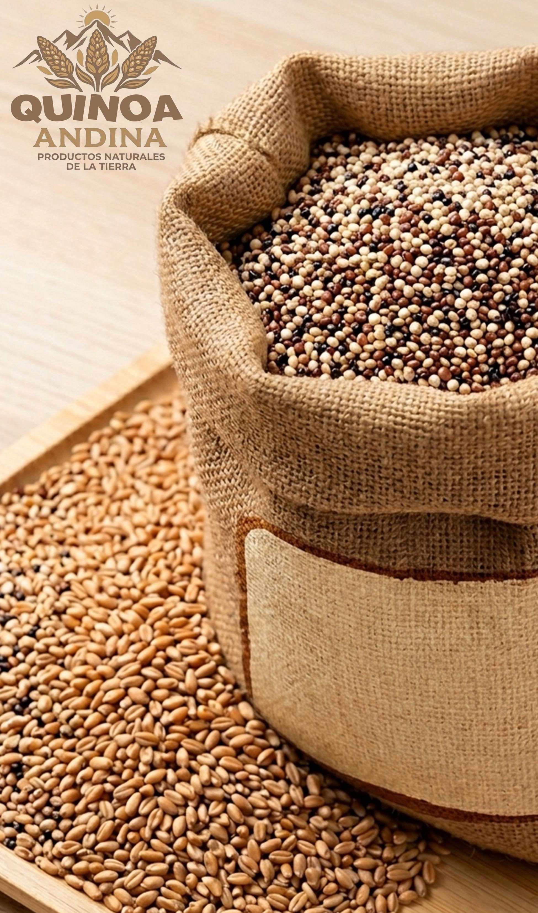

Sobre Nosotros
Somos un emprendimiento en La Paz dedicado a la distribución de trigo y quinua para mercados y negocios. Garantizamos calidad, precio justo y entrega confiable.

Nuestros Productos
- Sacos de trigo
- Sacos de quinua

Distribución de trigo y quinua en La Paz
Somos un emprendimiento en La Paz dedicado a la distribución de trigo y quinua para mercados y negocios. Garantizamos calidad, precio justo y entrega confiable.
